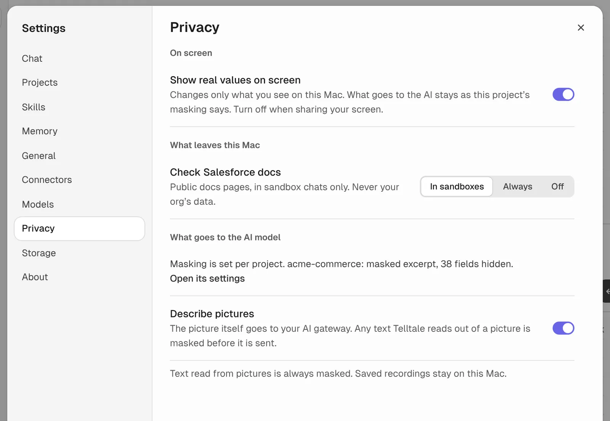

Guide · 4 of 5 · What Telltale does in your org
Written for Beta 1.8.1
What Telltale does in your org
Telltale is careful by design. Here is exactly what it does, what waits for your click, and where it can fall short.
What it does by itself
In your org, on its own, Telltale does two things.
- It reads. Records, setup, logs, code and changes. It never edits your data to find an answer.
- It switches logging on and off. When you start logging, it creates one logging flag for each person you chose and a detail level. It can extend the end time of its own flags, and it deletes its own when logging ends. It touches no one else's.
Telltale never asks for your Salesforce password. It uses the login you already have on your Mac, and keeps keys and tokens in your Mac's Keychain.
What needs your click
Nothing below happens without you choosing the button for it. None of it ever happens in production.
- Deploy and Put back of a fix. Deploy sends exactly the files that passed Check. Nothing deploys on its own, even when an org is set to Auto.
- Run on a Reproduce card. It runs the code the card showed, and everything it changes is rolled back. Callouts and anything published immediately still go out.
- Run on a one-call action, or a short piece of Apex. This one is committed.
- Delete of debug logs when your org's log storage is full, only after you choose whose logs to delete.
The ask says "Can't be undone" and shows the exact code. Telltale reads the records it names before and after, tells you what changed in one line, and lists it in the chat as "Can't be put back".
Production and orgs it can't confirm
Telltale treats an org as production unless it can show the org is a sandbox, a Developer Edition or a scratch org. If it can't tell, you see Production (not confirmed) and it behaves as production.
- Every read asks first. You can't set production to Auto.
- Turning on logs asks you to confirm, once per org per day.
- No deploy, no Reproduce run and no one-call action. Ever.
Ask first or Auto
The default is Asks first. In a sandbox, your lead may read a few things on its own, then asks before reading more. Set a sandbox to Auto in Settings, under Projects and then Orgs, and your lead reads it without asking. Auto covers reading only. It never deploys, and it covers the chat's own org only.
Telltale reaches only the orgs you gave it: your project's orgs and the one in the chat. An org that is merely logged in on your Mac is out of reach. Another org of the same project asks once per chat. Any other org is refused.
Masking, and what it can miss
Before text goes to the AI model, Telltale swaps personal details and secrets it recognises for tags like [email#3]. That covers emails, phone numbers, card numbers, names and addresses in known fields, and keys and tokens. You can add your own field names for a project. Real values show only on your screen, and you can switch that off in Settings, under Privacy.

It finds what it recognises. A secret hiding in an odd place may get through. Pictures go as they are. Telltale masks text it reads out of a picture, but the picture itself is sent to your AI model. Turn off Describe pictures to stop that. Before a chat on real data, open a log you know and check that the values you expect are hidden.
What leaves your Mac
Your masked questions and answers go to the AI model you chose, and nowhere else. Nothing goes to Telltale's makers: no org data, no usage statistics and no crash reports. Telltale only checks the public releases page to see if a new version is out. Chats, notes and settings stay on your Mac.
Replies to a chat tool leave only when you choose Send, or on the five-second auto-send if you turned that on. Auto-send never happens for production, or with a hidden value in the message.